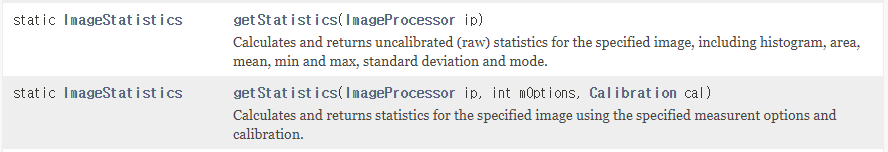

6.1. ImagePlus: ImageJ의 이미지 instance
Reference
- 지난 글에서 객체지향 프로그래밍(OOP: Object Oriented Programming)의 개념을 짧게 설명했습니다.
instance란 것은Class에 정의된 대로 만들어진 객체입니다.자동차 설계도(
Class)와 자동차(instance) 관계로 보시면 비슷합니다.instance는Class에 선언된Field와Method를 가지고 있습니다.
(ex. 그랜저Class로 만들어진 철수 차instance의 후방카메라 옵션)다른
Class로 만든instance끼리는 당연히 다르고 (ex. 람보르기니 vs 그랜저)같은
Class로 만든instance라도 다른 존재입니다 (ex. 철수 차 vs 영희 차)
ImageJ에서 이미지를 읽어들이면ImagePlusinstance가 됩니다.- 공식 문서를 클릭해보시면 자체적으로
changes부터win까지, 그리고 상위 클래스인java.awt.image.ImageObserver와ij.measure.Measurements로부터 상속받은Field가 추가로 상당히 많습니다. - 그랜저
Class는 자동차Class에 포함되므로 내연기관, 바퀴, 헤드라이트 등 자동차의 속성을 물려받습니다. 이 것을상속(inheritance)이라고 합니다.
- 공식 문서를 클릭해보시면 자체적으로
6.2. 이미지 분석
Reference
A Fiji Scripting Tutorial #3. Inspecting properties and pixels of an image
Jython Scripting Examples
ImageStatistics
ImageProcessor
image.sc Forum
ImageJ에서 이미지를 읽으면ImagePlus형식으로 받아들인다고 했고,ImagePlus는 여러 정보(Field)를 담고 있다고 했습니다.- 그럼 이 정보를 어떻게 꺼내볼까요?
Classinstance의Field에 접근할 때는[Instance이름].[Field이름]으로 접근합니다.- 철수가 그랜저 (Class:
Grandeur)를 새로 샀다고 합시다. - 철수네 자동차 (Instance:
CScar)의 색상(Field:color)은CScar.color입니다. - 철수네 자동차 색상을 출력하라고 하려면,
print CScar.color라고 하면 됩니다.
- 철수가 그랜저 (Class:
6.2.1. 이미지 기본 정보 분석
이미지 파일 구조글에서, 이미지는 x, y 2차원 공간에 놓인 픽셀들로 구성되며 이미지 파일에는Channels,Slices,Frames속성이 있다고 말씀드렸습니다.이 데이터들을 뽑아보겠습니다.
File > Open Samples > Boats.gif로 배 이미지를 엽니다.단축키
[를 눌러 아래 코드를 붙여넣고 실행합니다. 여기에서 다운로드도 가능합니다.1
2
3
4
5
6
7
8
9
10
11
12
13
14
15
16
17
18
19
20
21from ij import IJ, ImagePlus
# 떠 있는 이미지 캡처
imp = IJ.getImage()
# 이미지 정보 추출
print "title:", imp.title
print "width:", imp.width
print "height:", imp.height
print "number of pixels:", imp.width * imp.height
print "number of slices:", imp.getNSlices()
print "number of channels:", imp.getNChannels()
print "number of time frames:", imp.getNFrames()
types = {ImagePlus.COLOR_RGB : "RGB",
ImagePlus.GRAY8 : "8-bit",
ImagePlus.GRAY16 : "16-bit",
ImagePlus.GRAY32 : "32-bit",
ImagePlus.COLOR_256 : "8-bit color"}
print "image type:", types[imp.type]위 코드를 실행하면 아래와 같이 출력됩니다.
1
2
3
4
5
6
7
8
9# 실행결과
title: boats.gif
width: 720
height: 576
number of pixels: 414720
number of slices: 1
number of channels: 1
number of time frames: 1
image type: 8-bit코드 맨 마지막 부분,
print "image type:", types[imp.type]의 결과물로image type: 8-bit이 출력되었습니다.읽어들인
boats.gif의 type이ImagePlus의GRAY8형식이기 때문에imp.type은ImagePlus.GRAY8로 치환되었고,python의 데이터 타입 중 하나인dictionary호출에 따라types에서ImagePlus.GRAY8에 해당하는 값인8-bit가 출력된 것입니다.image type은 이 이미지의 픽셀이 어떻게 구성되어 있는지를 보여줍니다.- GRAY8 : 흑백. 한
pixel은 8 bit ($ 2^8 = 256 $개)의 정수값(0~255)을 가질 수 있습니다. - GRAY16 : 흑백. 한
pixel은 8 bit ($ 2^{16} = 65536 $개)의 정수값(0~65535)을 가질 수 있습니다. - GRAY32 : 흑백. 한
pixel은 32 bit의 소수(float)값을 가질 수 있습니다. - COLOR_256: 컬러. 한
pixel은 3 개(Red, Green, Blue)의 8 bit 채널을 가집니다. - COLOR_RGB: 컬러. 한
pixel은 3 개(Red, Green, Blue)의 32 bit 채널을 가집니다.
- GRAY8 : 흑백. 한
6.2.2. 이미지 통계 정보 분석
위에서
boats.gif는 width(가로) 720 x height(세로) 576 이므로 총pixel수는 414,720개입니다.이미지 처리 중 많은 작업이 명도(
brightness)와 대비(contrast) 조정입니다.이미지를 조정하기에 앞서 현재 이미지의 상태를 파악해야 하는데, 작은 이미지라도 상당히 많은 수의
pixel로 이루어져 있기 때문에 전체적인 통계 데이터를 파악할 필요가 있습니다.
6.2.2.1. ImagePlus로부터 통계 정보 분석
ImageJ에서 이미지 데이터를 다루는ImagePlus객체는getStatistics()라는Method를 가지고 있습니다.ImagePlus의getStatistics()는 4가지 사용 방법이 있습니다.- 인자 없이 실행: Calibration을 반영한 통계결과 (histogram, area, mean, min, max, st.dev, mode)
- 측정항목(
mOptions)을 특정해서 실행: 특정한 항목에 대해서만 결과를 출력합니다. - 측정항목과 구간 수 (
nBins)를 특정해서 실행: 2. + 지정된 히스토그램 bin count로 실행합니다. - 측정항목, 구간 수, 히스토그램 범위(
histMin,histMax)를 특정해서 실행: 3. + 히스토그램 범위를 지정하여 실행합니다.
Calibration은 이미지의 1 픽셀이 실제 길이로 얼마에 해당하는지(spatial calibration), 이미지의 gray scale이 실제 데이터로 얼마에 해당하는지(density calibration) 등의 정보를 담고 있습니다.자세한 사항은 ImageJ > Cookbook > 2. Image Calibration을 참고하시기 바랍니다.
예제 이미지를 여기에서 다운로드하여 실습해봅시다.
0~255 Gray Scale 중 0을 -2에, 254를 45에 대응하여 Calibration한 이미지입니다.1
2
3
4
5
6
7
8
9
10
11
12
13
14
15
16
17
18
19
20
21
22
23
24
25
26
27
28
29
30
31
32
33from ij import IJ
# 1. Load Image
imp = IJ.getImage()
# 2. Image 통계 정보 분석
# 2-1. 인자 없이 실행
stats1 = imp.getStatistics()
# 3. 분석 결과 출력
# 3-1. 통계 정보 출력
print "stats1", stats1 # stats1에 저장되는 내용 확인 (여기 보이지 않는 것도 저장됨)
print "area:", stats1.area # 면적
print "mean:", stats1.mean # 평균
print "min:", stats1.min # 최소값
print "max:", stats1.max # 최대값
print "st.dev:", stats1.stdDev # 표준편차
print "mode:", stats1.mode # 256 histogram의 mode
# 3-2. 히스토그램 출력
# 3-2-1. array 출력
print "histogram:", stats1.histogram()
# 3-2-2. plot 출력 1
hist1 = imp.plotHistogram()
plot1 = hist1.getImagePlus()
IJ.save(plot1, "C:\Arbeitplatz//19_hexoblog_backup\source\_posts\ImageJ-tutorial-6-Inspection\plot1.tif")
# 3-2-3. plot 출력 2
from ij.gui import HistogramWindow
hist2 = HistogramWindow(imp)
plot2 = hist2.getImagePlus()
IJ.save(plot2, "C:\Arbeitplatz//19_hexoblog_backup\source\_posts\ImageJ-tutorial-6-Inspection\plot2.tif")- 실행 결과, stats1로 저장한 통계 분석 결과의 각 항목들이 출력되었습니다.
histogram은 구간별 count array로 출력할 수도 있고 (# 3-2-1),
plot으로 출력할 수도 있습니다 (# 3-2-2, # 3-2-3).두 방식의 plot 출력은 디자인만 조금 다르고 본질적으로 같습니다. 원하는 것을 사용하면 됩니다.
getImagePlus()와IJ.save()를 활용하면 plot을 그림파일로 저장할 수 있습니다.
폴더(디렉토리)가 역슬래시(\)로 표시된 부분과 이중 슬래시(//)로 표시된 부분이 공존하는 것은 역슬래시 뒤에 숫자가 오면ImageJ가 이상하게 인식하기 때문에 부분 변경한 것입니다.
폴더 이름이 숫자로 시작하지 않으면 되는 문제입니다.
6.2.2.2. ImageProcessor로부터 통계 정보 분석
ImageJ는 이미지 통계 분석을 위해ImageStatistics라는 모듈을 제공합니다.6.2.2.1에서
imp.getStatistics()실행 결과로 얻어진stats1도ImageStatistics클래스입니다.ImageStatistics에서 사용하는getStatistics()는 입력으로ImageProcessor를 읽어들이므로 이미지를ImagePlus형식에서ImageProcessor형식으로 변환해줘야 합니다.ImageProcessor라는 이름만 보면 뭔가 계산을 대신 해줘야 할 것 같지만, 알고 보면ImageProcessor는ImagePlus의Field중 하나로, 이미지의 2D데이터 + 통계데이터 + 조작을 위한Method를 포함한 것이ImageProcessor입니다.3D 이상이라 볼 수 있는
stack관련한 데이터는ImageProcessor에 포함되지 않았으며, 이 것은ImageStack에 있습니다.ImageProcessor로 2D 정보만 추린 후, 여기에서 통계정보를 얻는 명령이getStatistics()입니다.getStatistics()명령을ImageStatistics에서 찾아보면, 아래와 같이 두 가지 사용법이 있습니다.
getStatistics(ImageProcessor ip): 인자로ImageProcessor객체만을 입력하고,calibration되지 않은 상태의 이미지 데이터에 대한 통계를 출력합니다.ImagePlus에서 사용하는getStatistics()는 Calibration 된 이미지로, 헷갈리기 쉽습니다.getStatistics(ImageProcessor ip, int mOptions, Calbiration cal): 추가 인자로mOptions와Calibration인자cal을 넣을 수 있습니다. 이 때 주어진 measurement option(mOptions)과 calibration(cal)을 적용한 통계결과를 출력합니다.
ImagePlus에서 데이터를 뽑는 6.2.2.1 방식이 덜 복잡하고 더 간결해 보입니다.
하지만 이런 방법도 있다는 차원에서 살펴보고 지나가겠습니다.6.2.2.1 과 동일한 작업을
ImageStatistics(ip)로 진행해 보겠습니다.1
2
3
4
5
6
7
8
9
10
11
12
13
14
15
16
17
18
19
20
21
22
23
24
25
26
27
28
29
30
31
32
33
34
35from ij import IJ
from ij.process import ImageStatistics as IS
# 1. Load Image
imp = IJ.getImage()
# 2. Image 통계 정보 분석
# 2-1. ImageProcessor 호출
ip = imp.getProcessor()
# 2-2. 인자 없이 분석
stats2 = IS.getStatistics(ip)
print "stats2", stats2
print "area:", stats2.area
print "mean:", stats2.mean
print "min:", stats2.min
print "max:", stats2.max
print "st.dev:", stats2.stdDev
# 3-2. 히스토그램 출력
# 3-2-1. array 출력
print "histogram:", stats2.histogram()
# 3-2-2. plot 출력 1
hist1 = imp.plotHistogram()
plot1 = hist1.getImagePlus()
IJ.save(plot1, "C:\Arbeitplatz//19_hexoblog_backup\source\_posts\ImageJ-tutorial-6-Inspection\plot3.tif")
# 3-2-3. plot 출력 2
from ij.gui import HistogramWindow
hist2 = HistogramWindow(imp)
plot2 = hist2.getImagePlus()
IJ.save(plot2, "C:\Arbeitplatz//19_hexoblog_backup\source\_posts\ImageJ-tutorial-6-Inspection\plot4.tif")- 실행 결과, 6.2.2.1 과 동일한 형태로 다른 값들이 출력됩니다.
예를 들면
max값이 45.185에서 255로 바뀌었는데, Calibration이 되지 않은 값이라 그렇습니다.실제 실행시 # 3-2-2 그래프는 위 그림과 달리 바닥에 납작 엎드린 히스토그램이 출력되지만, 마우스로 빨간 원 안에 해당하는 부분을 클릭해서 상한선을 낮춰주면 전체적으로 히스토그램이 높게 표현됩니다.
이번에는
ImageStatistics(ip, mOptions, cal)로 진행해 보겠습니다.- 위 코드에서 세 줄만 바꿔주면 됩니다.
1
2
3
4
5options = IS.MEAN | IS.MEDIAN | IS.MIN_MAX # options에 뽑을 데이터를 정의하고
stats3 = IS.getStatistics(ip, options, imp.getCalibration()) # 함수에 인자를 넣습니다.
# 그리고 아래 출력 부분에 이걸 추가해 줍시다.
print "median:", stats3.median #중간값(median)을 뽑습니다.- 재미를 위해 여기서 하나만 더 바꿔봅시다.
1
2
3# IS.MIN_MAX 앞에 #을 붙여봅시다.
# 주석으로 처리해버리겠다(comment out) = 실행하지 않겠다는 뜻입니다.
options = IS.MEAN | IS.MEDIAN #| IS.MIN_MAX- 이제 아래 코드가 되었습니다.
1
2
3
4
5
6
7
8
9
10
11
12
13
14
15
16
17
18
19
20
21
22
23
24
25
26
27
28
29
30
31
32
33
34
35
36from ij import IJ
from ij.process import ImageStatistics as IS
# 1. Load Image
imp = IJ.getImage()
# 2. Image 통계 정보 분석
# 2-1. ImageProcessor 호출
ip = imp.getProcessor()
# 2-2. 항목 지정 분석
options = IS.MEAN | IS.MEDIAN #| IS.MIN_MAX
stats3 = IS.getStatistics(ip, options, imp.getCalibration())
print "stats3", stats3
print "area:", stats3.area
print "mean:", stats3.mean
print "median:", stats3.median
print "min:", stats3.min
print "max:", stats3.max
print "st.dev:", stats3.stdDev
# 3-2. 히스토그램 출력
# 3-2-1. array 출력
print "histogram:", stats3.histogram()
# 3-2-2. plot 출력 1
hist1 = imp.plotHistogram()
plot1 = hist1.getImagePlus()
IJ.save(plot1, "C:\Arbeitplatz//19_hexoblog_backup\source\_posts\ImageJ-tutorial-6-Inspection\plot5.tif")
# 3-2-3. plot 출력 2
from ij.gui import HistogramWindow
hist2 = HistogramWindow(imp)
plot2 = hist2.getImagePlus()
IJ.save(plot2, "C:\Arbeitplatz//19_hexoblog_backup\source\_posts\ImageJ-tutorial-6-Inspection\plot6.tif")- 실행 결과를 6.2.2.1 과 비교해보면 몇몇 차이점들이 보입니다.
mean값이 158.2 에서 27.27 로 바뀜 : Calibration이 적용된 것입니다.min과max가 0 이 되어버림:IS.MIN_MAX를 주석처리해서 데이터가 추출되지 않았습니다.
ImagePlus상태에서 데이터를 분석하는 것이 더 편하고 직관적입니다.
특별한 이유가 없으면ImageStatistics로 넘어가지 않는 것을 권장합니다.